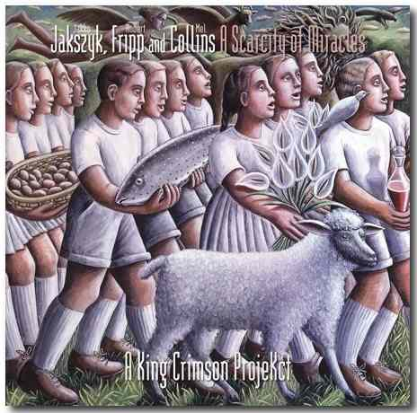
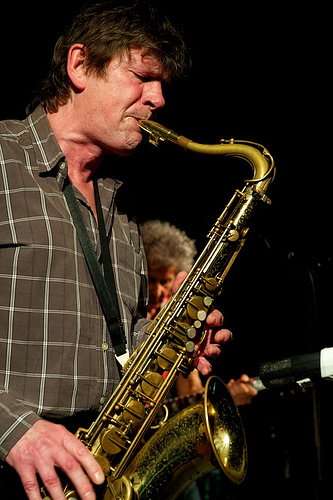
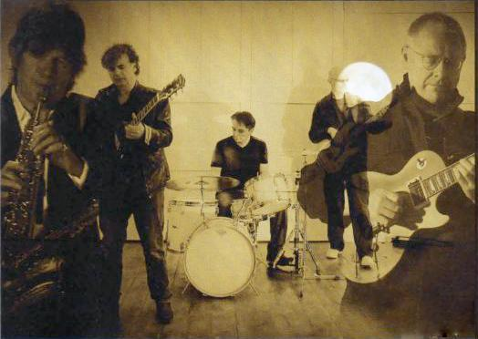
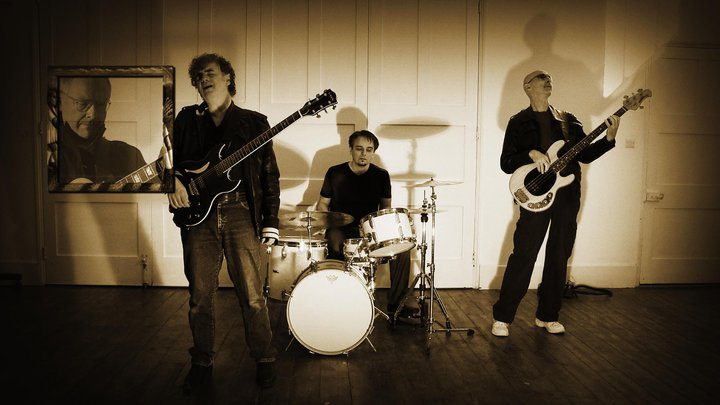

A scarcity of miracles
A scarcity of miracles
|
|
|

A Scarcity of Miracles (Una
escasez de milagros)
Editado
en mayo de 2011
Firmado por el trío Jakszyk,
Fripp & Collins, contó con la colaboración de Levin y Harrison, las dos
terceras partes de la sección rítmica de la última gira de KC hasta ese
momento. En la portada del disco puede leerse el subtítulo "A King Crimson
ProjeKct".
El subtítulo del álbum no es casual. Jakko Jakszyk, fan
de KC en su adolescencia (vio en vivo a KC en 1971 a la edad de 13 años), formó parte desde mediados de los ‘70 en bandas
Canterbury, estilo Camel o Soft Machine. Luego realizó trabajos solistas,
algunos de ellos compartidos con Gavin Harrison. Entre 2002 y 2007 formó parte
de 21st Century Schizoid Band, banda tributo a KC, junto a antiguos miembros del
grupo: Ian McDonald, Peter y Michael Giles, Mel Collins y Ian Wallace. A fines
de 2006 editó su álbum solista "The bruised romantic Glee Club", con
invitados Crim: Fripp, Mel Collins, Ian Wallace; también participó Gavin
Harrison. En ese disco Jakszyk edita dos covers de clásicos KC: Islands y
Picture of a city (llamado en esa ocasión Picture of a indian city, porque
incorpora música indú). Gavin Harrison, desde 2002 percusionista de la banda
Porcupine Tree, afín a KC (incluso compartieron escenarios), se acopló a KC
como quinto integrante en la pequeña gira por USA en 2008 celebrando el
cuarenta aniversario, conformando un dueto percusivo con Pat Mastelotto. Si a
Jakszyk y Harrison les acoplamos a Fripp, Levin y Mel Collins, cualquiera podría
imaginar música Crimson. Pero no fue así, y Fripp se encargó de aclararlo. El
15 de diciembre de 2010 describió el trío Jakszyk-Fripp-Collins en su diario
on line como un esfuerzo que "tiene el gen de Crimson, pero no es bastante
King Crimson. Se trata de un ProjeKct Crimson, aunque esto no fue la intención. Teniendo
en cuenta la reserva de genes, supongo que esto cuenta como evolución. Si
Jakszyk-Fripp-Collins fueran nombrados como ProjeKct, lo que sería legítimo en
mi opinión, a continuación todo tipo de expectativas, categorizaciones,
limitaciones y tontos comentarios se hubieran puesto en marcha para disuadir a
los oídos de inocentes oyentes." También comentó que el origen del trío
era de hecho una propuesta, luego abandonada, de conformar ProjeKct Seven (con
él mismo, Jakszyk, Collins, Levin, Harrison y posiblemente algunos otros músicos)
y describió el álbum como uno de sus favoritos, de aquellos en los que él fue
un elemento determinante. Cabe destacar que hubiera sido (o es) un ProjeKct atípico,
porque a diferencia de sus antecesores no se trata de música instrumental con
gran dosis de improvisación. La aclaración de Fripp tiene valor, porque quien
escucha el disco intentando encontrar a KC, se decepcionará. Fripp no es
protagonista principal, el saxo de Collins no es rabiosamente fusión jazz-rock
como lo era en "Islands" y "Earthbound" (de los años
1971/72), y Jakszyk impone su estilo apocado en la
melodía vocal. Los temas son homogéneos, con un ritmo entre lento y moderado,
no hay importantes cambios durante el transcurso del disco; es más, parecen
partes de un solo tema. No hay rock fuerte ni largos tramos instrumentales
(todos los temas son cantados). Pero después de escuchar el disco por segunda
vez, vamos descubriendo que es de alta calidad, que es algo nuevo, y nos atrapa.
Queremos escucharlo de nuevo... y una vez más. Otra vez Fripp logra llevarnos a
otro terreno. 
Izquierda: Mel Collins. Abajo: imágenes del videoclip oficial del tema que dá nombre al disco 
 |